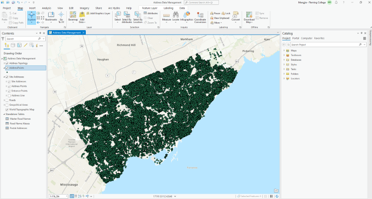

Breakdown of Methodology

GEOM99 Web Group 5 Solution
ArcGIS Solutions are products created by ESRI for industries that allow clients to deploy location-based solutions to problems. There are currently 141 solutions available. The hidden address problem is part of the emergency service/municipalities sector. ArcGIS Solutions has an Address Data Management solution that is used to maintain addresses and allow municipalities to update their datasets. We tried out this option because it seemed closely aligned with our problem statement. We played around with the different tasks and tried to upload our own open source address data. However, upon deployment it was evident that this solution was out of scope of our problem statement. Our statement is specific to the hidden address problem and is not related to data management. The address data management solution is used for data control and maintenance.
There is a lot of practical use for ArcGIS solutions but our problem statement is specific to the hidden address problem and not centred around data management. We found it useful to explore this option but in the end it is a path that we did not go down.
Survey123 is an ESRI product. The survey can be filed out through a web form or through the Survey123 app. This product is able to record things in a geospatial manner, individuals can record their coordinates through this service. It is reasonably intuitive to use and create through editing the xlxs spreadsheet that creates the survey questions and parameters. Here are some examples of the survey xlxs spreadsheet. Two surveys were created that both address a part of the hidden address problem. Survey 1 records unique addresses that previously did not exist in a database. So these could be potential addresses that were “missed” by the municipality. In order to do this there must be a feature layer that is uploaded to arcgis online. The feature layer through its rest endpoint is referenced by Survey123 through an pull_data function on the xlxs spreadsheet. Here are some examples of Survey 1. In this case the test address is 4 Merrill Ave W because it is one that we know already exists. Survey 2 addresses the opposite issue. What if an existing address is partitioned and now it is 4a and 4b instead of just being 4 Merrill Ave W. So in order to capture this scenario the second survey only records addresses that already exist in the referenced feature layer that is published in arcgis online.
Survey123 is a wonderful product in the ESRI suite. It is intuitive to make after a brief learning curve and it is a survey format that can be shared due the xlxs spreadsheet. Additionally since it’s an ESRI product you can connect its outputs( e.g. the feature class from this survey) and use it in other apps that can display this information in a visually appealing and informative way. We moved forward with this option in our solution.
The ArcGIS Dashboard is a dynamic tool for visualizing geographic information, integrating maps, charts, and graphs to convey complex spatial data insights. Users can track real-time data, monitor key performance indicators, and make informed decisions based on spatial analytics. These dashboards present location-based data through interactive visualizations, facilitating efficient management and communication of information. They offer simplified maps and graphs for easy interpretation, streamlining data presentation in a single interface. The process outlined entails the creation of a fundamental dashboard for data comprehension within ArcGIS Online (AGOL). Beginning with logging into AGOL and navigating to the dashboard creation option, users are prompted to furnish a title and description before incorporating map elements through the designated tool. Further customization involves the addition of a header and information bar, including a Google Maps URL for the York region. Data importation entails the inclusion of Address Point and Road data as feature layers and shapefiles, with credits attributed to the latter. Following this, map configuration involves the creation of a web map utilizing specified layers and basemap settings, alongside adjustments for transparency and popup information relevance. Feature layer settings are modified, including the addition of sample data and refinement of popups and visuals. Instructions are edited within the collapsible sidebar, while indicators are introduced to display unit numbers and data update status, contributing to a comprehensive dashboard experience.
The ArcGIS Dashboard is an essential tool for effectively visualizing and analyzing geographic data. It enables users to track real-time information, monitor key performance indicators, and make informed decisions. With its interactive visualizations and streamlined interface, the dashboard facilitates efficient management and communication of spatial data, enhancing decision-making processes.
ArcGIS Experience Builder represents the cutting-edge approach to crafting web applications without the necessity of coding. It enables the creation of both map-focused and non-map-focused applications, adaptable for fixed or scrolling screens and single or multiple pages. Users can effortlessly select desired tools from a diverse array of widgets through a simple drag-and-drop interface. Moreover, the tool facilitates the customization of templates and seamless interaction with both 2D and 3D content, all within a unified platform. ArcGIS Experience Builder ensures that your web applications boast a polished appearance and optimal performance across various mobile devices. Experience Builder serves as an excellent platform for displaying maps with updated records. By integrating a survey form where individuals can input address records, these entries can be seamlessly updated into a feature layer. Subsequently, this resulting feature layer can be hosted as an image layer within ArcGIS Online and incorporated as an image layer representing added address records. Within this image layer, users can conduct searches for addresses within the POI (Toronto Municipal boundary), revealing new records added from survey results directly within the map layout.
ArcGIS Experience Builder revolutionizes web application development with its code-free environment, catering to map-centric and non-map-centric applications. Its flexibility adapts to various layouts, empowering users to create dynamic experiences effortlessly. The intuitive interface and extensive widget options streamline design while ensuring customization possibilities. Seamless integration of 2D and 3D content, mobile device support, and incorporation of updated survey records enhance spatial data management and visualization.
©Geom99 Web Group 5 April 2024